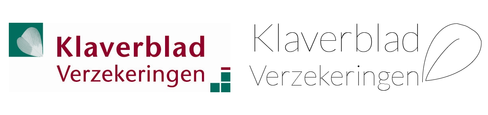

Klaverblad Verzekeringen
Klaverblad verzekeringen heeft een beetje een oubollig logo. Met een hele simpele lichte stijl probeer ik het er wat strakker en frisser uit te laten zien.
Voor deze persoonlijke cursus heb ik een aantal logo's van grote bedrijven aangepakt, en gekeken of ik deze kon verbeteren.
Klaverblad verzekeringen heeft een beetje een oubollig logo. Met een hele simpele lichte stijl probeer ik het er wat strakker en frisser uit te laten zien.

Het logo van Delta Lloyd is opzich niet zo verkeerd, alleen een beetje saai. De lowercase lichtblauwe letters zien er heel passief uit, en ik denk dat dat iets is wat je niet wil als groot bedrijf, je wil er zijn en laten horen dat je er bent en beschikbaar bent. Met de vormtool heb ik het blauw van Delta Lloyd erin gehouden, en ik heb voor een sterk uppercase font gekozen voor de typografie.

Zwembad de Waterdam in Volendam heeft al jaren een oud lelijk logo. Door Line-art en typografie heb ik het logo nieuw leven ingeblazen met zwembad-, water- en zee georienteerde kleuren.